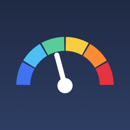

体感予報
サポート / Support
日本語
体感予報は、「今日の気温は何度か」ではなく「外に出るとどれくらい暑い・寒いのか」に答える、体感温度を主役にした iPhone・iPad 用の天気アプリです。
お問い合わせ
ご質問、不具合のご報告、ご要望は、メールでお送りください。お使いのiPhoneの機種とiOSのバージョン、どの画面で何をしたときに起きたかを書き添えていただけると助かります。
よくある質問
現在地の天気が表示されません。
iPhoneの「設定」→「プライバシーとセキュリティ」→「位置情報サービス」で、体感予報を「このAppの使用中」にしてください。位置情報を許可しなくても、画面上部の地点名をタップして、地名・住所の検索や地図で場所を指定できます。
体感温度と、自分の感じ方が違います。
体感温度は Apple Weather が提供する値です。アプリの「設定」の「暑さ・寒さの感じ方」で暑がり・寒がりを選ぶと、快適さの判定やコメントがあなたに合わせて変わります。Pro の「あなたの感じ方」では、記録した体感から傾向を学び、判定や7日間の色分けに反映します（体感温度の数値そのものは変わりません）。
Proを購入したのに使えません（機種変更・再インストールの後など）。
購入時と同じApple Accountでサインインしたうえで、アプリの「設定」の「Pro」にある「購入を復元」をタップしてください。
「天気情報を取得できませんでした」と表示されます。
通信状況をご確認のうえ、画面を下に引っぱって更新してください。天気情報の提供元の都合で、一時的に取得できない場合があります。
ご注意
表示する天気は指定地点付近の予報で、実際の天気と異なる場合があります。体感温度やコメントは目安で、感じ方には個人差があります。気象警報や熱中症の情報は、気象庁などの公式発表をご確認ください。
English
Feel Weather is a weather app for iPhone and iPad built around the apparent ("feels like") temperature. Instead of asking "what is the temperature today?", it answers "how hot or cold will it feel when I go outside?". The app is in Japanese.
Contact
For questions, bug reports, or requests, please email us. Including your iPhone model, iOS version, and what you did when the problem happened helps us a lot.
FAQ
The weather for my current location is not shown.
In the iPhone Settings app, go to Privacy & Security → Location Services and set Feel Weather to "While Using the App". Without location access you can still tap the place name at the top to search for a place or pick one on the map.
I bought Pro but it is not active (after changing iPhones or reinstalling).
Sign in with the same Apple Account you used to buy it, then tap "Restore Purchase" (購入を復元) under Pro in the app's Settings.
Note.
Forecasts are for the area near the selected place and may differ from actual conditions. Apparent temperatures and comments are guides; how people feel varies. For weather warnings and heat illness alerts, check official sources.